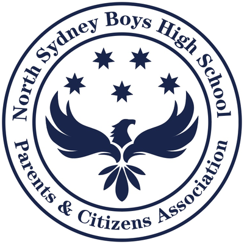

The NSBHS P&C is the parents and citizens association of North Sydney Boys High School. We work in partnership with the school to support our boys' learning and wellbeing, and to build a strong school community.
The P&C is led by an elected Executive Committee of parent volunteers: five office bearers (President, two Vice Presidents, Secretary and Treasurer) and Executive Committee members who also act as Year Representatives.
Our work is carried out through four subcommittees, each led by a Convener:
The names, roles and contact emails of the 2027 Executive Committee and subcommittee teams will be published here after the Annual General Meeting.
This page is being updated for 2027. Full details will be added soon. In the meantime, please email president@nsbhspnc.org.